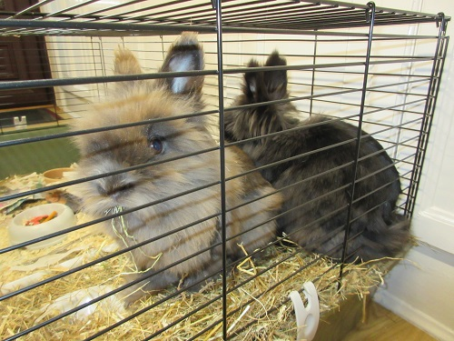

Rabbits are always bonded to something from other rabbits to humans. Many people buy rabbits in pairs so that they aren't lonely and will bond with each other. This can work well, however when they are first together for the first time or even if they were together in the past they have to learn to bond and share. At first rabbits can fight together or steal another's food but you can help them create a relationship by slowly introducing each other, evetime it goes well you can next time leave them together for longer, until they are used to living with each other. If you want a strong relationship between yourself and your rabbit then you should just buy one rabbit as then they have a relationship with you meaning they might be friendlier than if you bought two of them. However, if you did buy one rabbit you should try and see them at least once a day as they can get lonely. If you want a good relationship with your rabbit then the first week you have him you can stroke them, talk to them (So they get used to your voice) and feed them but you shouldn't get them out of there hutch whilst they are getting used to things as they might feel threatened or uneasy. If you get you rabbit to eat something out of your hand then that means they trust you and also if they lay down with their back feet out, that is another sign of trust.
